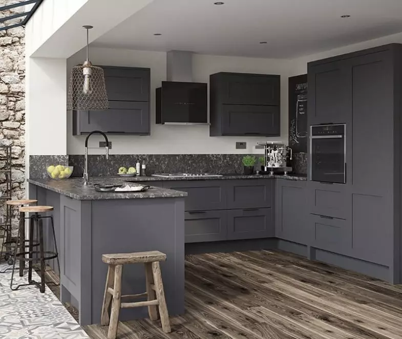
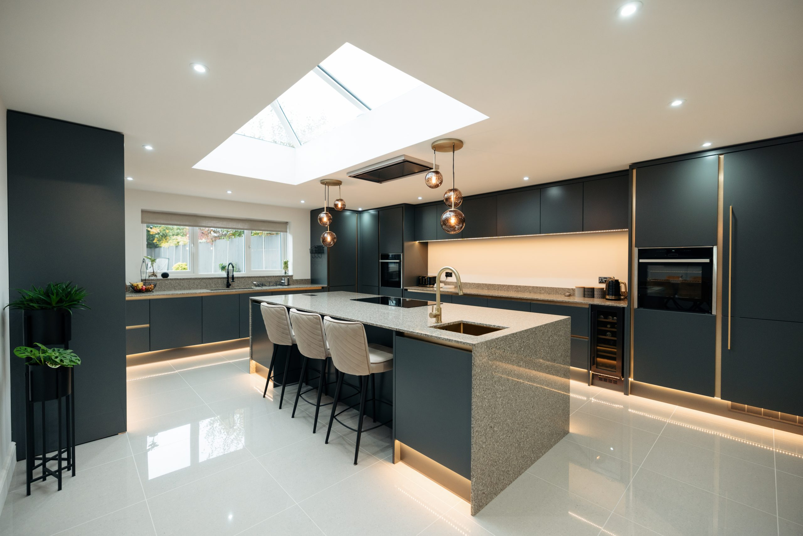
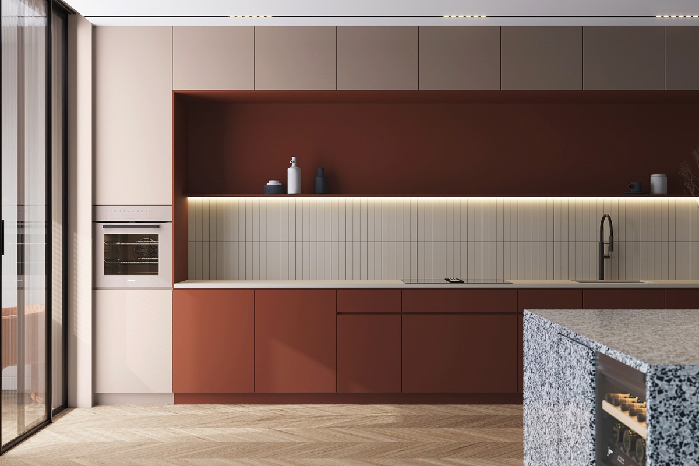
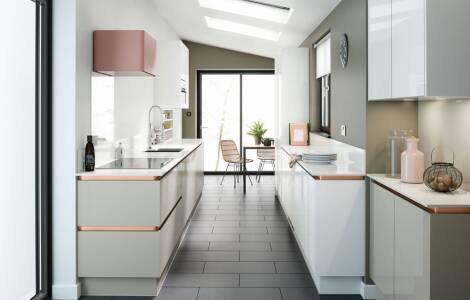
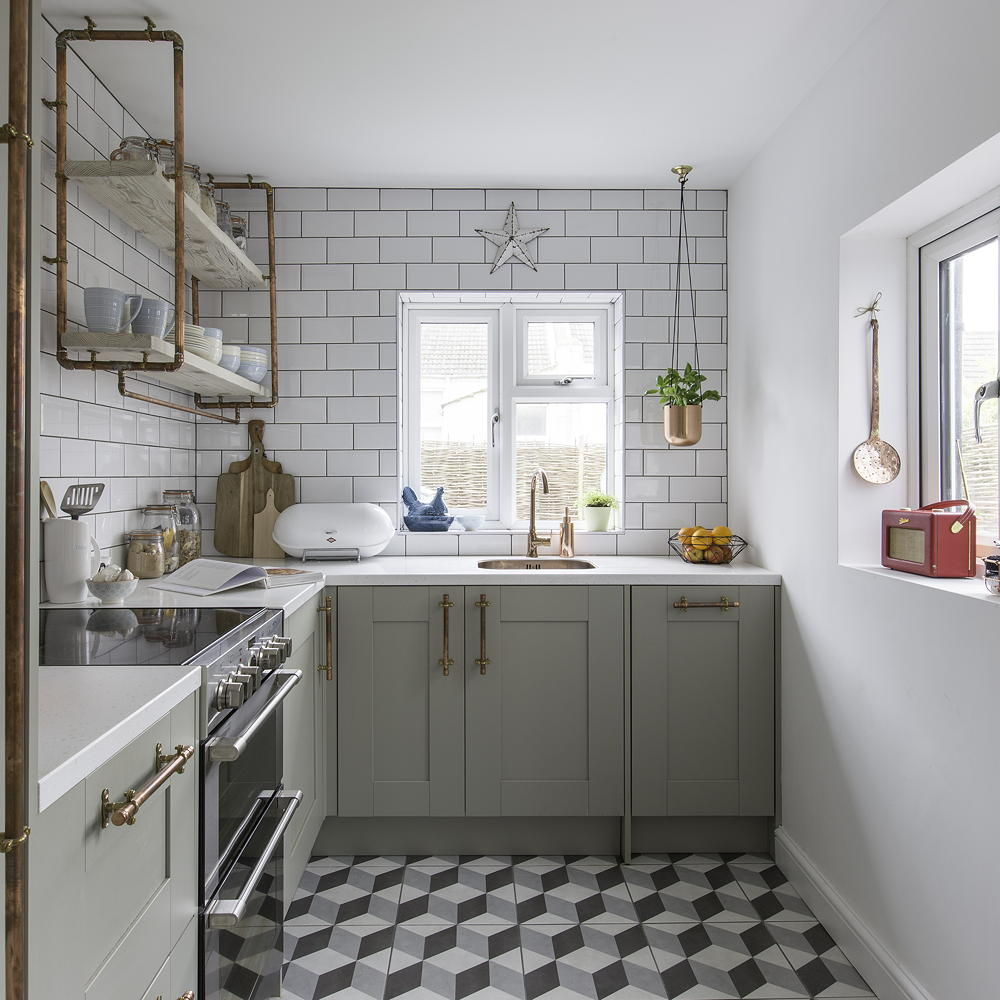

Don't be fooled, a darker kitchen is anything but gloomy. Creating that industrial look is bang on trend
If you have the space, wrap that kitchen round every wall to maximise storage space and create a great family area


Kitchens are often chosen as 1 colour, brighten things up and bring that fresh explosion of colour to your kitchen
Utilising space is key in smaller spaces, a galley style kitchen is a great way to increase storage


Get that industrial feel by using unusual materials for storage solutions, but carry that look across your kitchen for a great finish